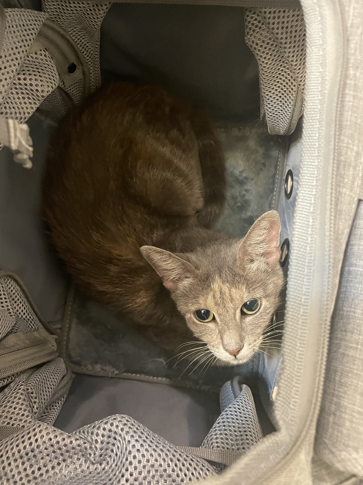
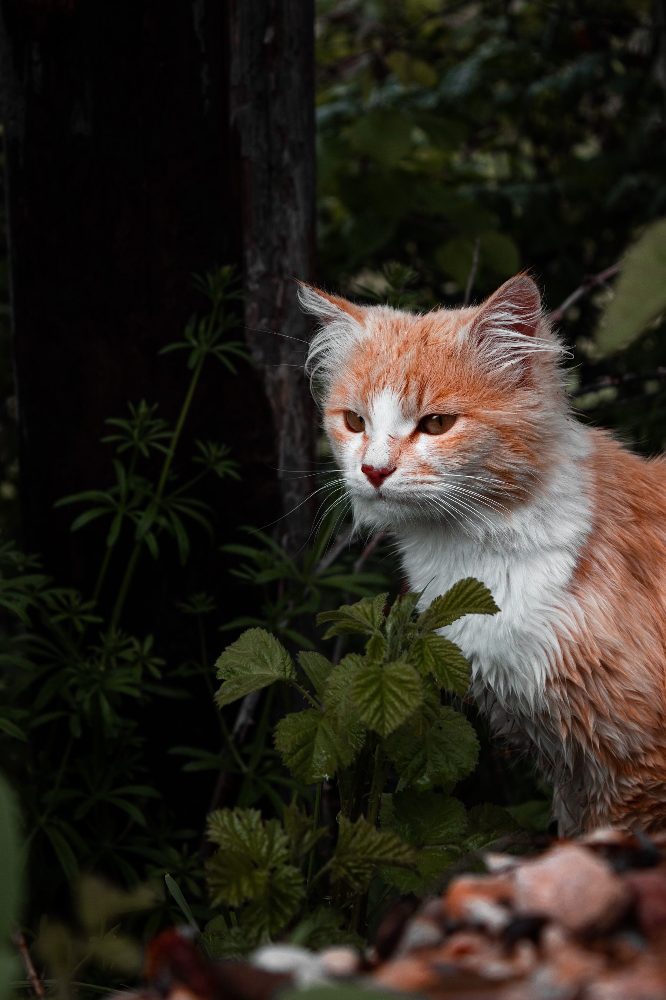
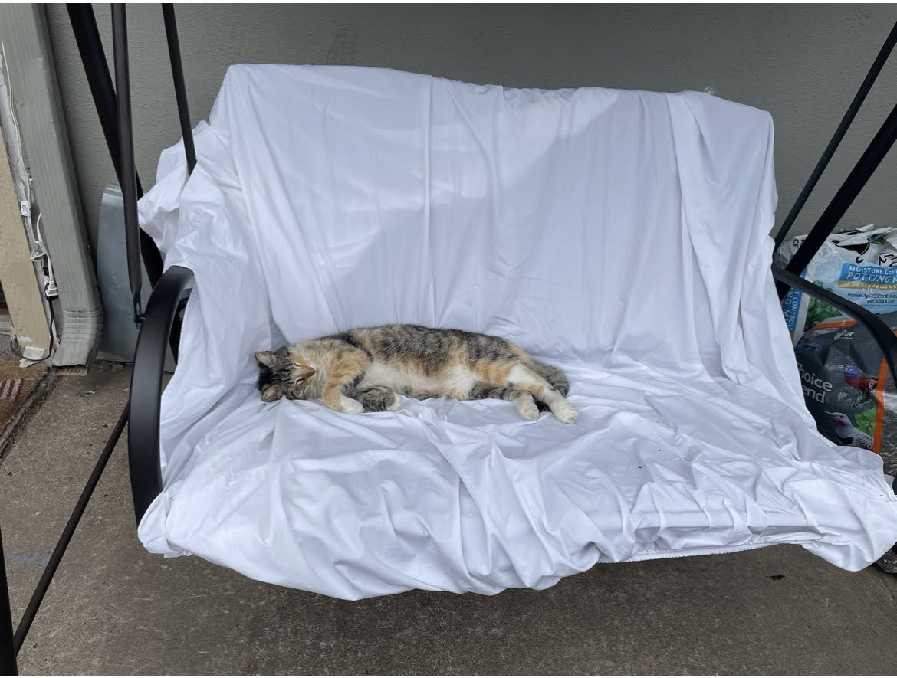
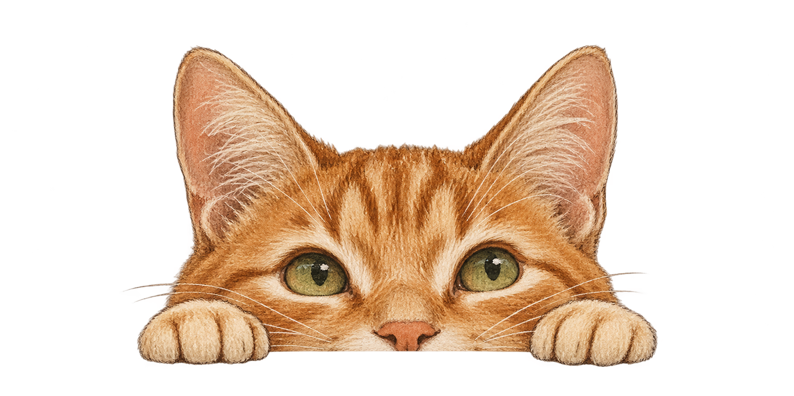

Found an Animal
If you've found an animal in Houston, start with the clearest next step based on species, condition, and urgency.
Happy's Foundation
Connecting Houston's animal-welfare community to create meaningful change for animals and people.


If you've found an animal in Houston, start with the clearest next step based on species, condition, and urgency.

Happy's Foundation is building a more connected Houston animal-welfare network through research, resource mapping, and practical coordination.
There are many ways to help, from direct animal support to partnerships, outreach, and future local services.
Published a four-part research series examining the global problem, Houston’s context, approaches that show promise, and where Happy’s could fit.
Read the research →Organizing public information about local animal-welfare resources by geography, service area, and available capabilities.
Explore the directory →Studying foster barriers, conducting outreach, learning from early manual coordination, and exploring responsible university involvement.
See the Foster Network →One vision. Two organizations.
The developing nonprofit is intended to focus on animal-welfare education, resource coordination, foster-network development, and community partnerships.
A separate business is being developed to connect customers with useful local services, compensate providers when work begins, cover its own expenses, and create earned revenue.
The organizations are intended to remain legally and financially separate. The business may support the Foundation through separately documented contributions, but no fixed amount or percentage is being promised.
Understand the model →Limited resources and disconnected information make animal welfare work harder.
Shelters and rescues cannot accept every animal when space, staffing, or foster homes are limited.
Open-ended expectations and limited follow-up can turn willingness into burnout or a commitment that cannot last.
Intake, scheduling, repeated communication, and status updates compete with time needed for direct animal care.
Finders may not know which resource fits, whether it has capacity, or what responsible step comes next.
Clearer information, matching, and follow-up could reduce the burden on individuals.
Happy’s is exploring a coordination role that supports existing expertise rather than replacing it.
Organize reviewed Houston resources and make responsible first steps easier to understand.
Compare a reviewed need with verified capability and current availability before making a handoff.
Use clearer commitments, communication, and follow-up so one finder or foster is not carrying the entire case alone.

They can’t ask.
We don’t wait.